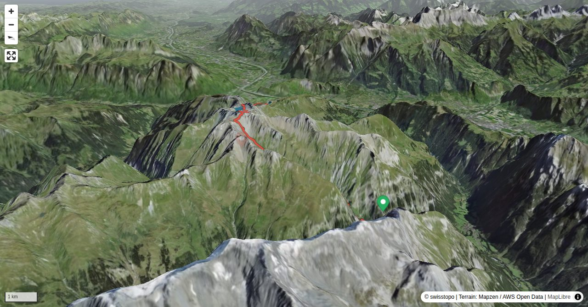

Wer den Pizol in der ersten Hälfte des letzten Jahrhunderts besteigen wollte, musste nebst tadelloser körperlichen Verfassung auch Gletscherausrüstung mitbringen. Tempi passati, heute ist der Aufstieg mit Hilfe der Pizolbahnen weder besonders lang noch anstrengend. Und vom Pizolgletscher ist kaum noch was übrig, die blau-weiss markierte Alpinwanderroute macht den Pizol zu einem der beliebtesten Alpinwandergipfeln der Ostschweiz. Der hier beschriebene, viel exklusivere Aufstieg verlangt zwar keine Spezialausrüstung, aber etwas Kondition für 1600 Höhenmeter Aufstieg und ein faible für geröllig-karge Landschaften. Mit grosser Wahrscheinlichkeit begegnet man im Tersol wesentlich mehr Steinböcken als Mitwandernden. Letztere begleiten einen dann sicher ab der Wildseeluggen zur durchaus willkommenen Erfrischung auf der Pizolhütte. Und auf dem äusserst Knie schonenden "Abstieg" ins Rheintal. Wer weniger empfindliche Gelenke besitzt und auch im Abstieg die Einsamkeit sucht, steigt vom Pizol ins Weisstannental oder wieder wieder ins Taminatal hinab.
Vom Lavtinasattel (Variante 2) in wenigen Minuten erreichbar.
Quick Facts
| Summit elevation | 2838 m |
|---|---|
| Difficulty | SAC T4+ Check the route notes below for terrain and commitment level. Guide |
| Trailhead | Gigerwald, Restaurant |
| Distance | 12.5 km (out-and-back) |
| Total ascent | ~1649 m |
| Elevation range | 1230-2838 m |
| Route sources | SAC Route Portal |
Photos


All photos: SAC Route Portal
Interactive Route Map
Map tiles: © swisstopo (CC BY 3.0) | © OpenStreetMap contributors | Map library: Leaflet. Route line is approximate — verify against the SAC Route Portal before going.
3D Terrain View

Tiles: © swisstopo (SWISSIMAGE) + AWS Terrain Tiles. Powered by MapLibre GL JS. Open fullscreen ↗
Route Details
Von Gigerwald durchs Tersol, Abstieg zur Pizolhütte
- Variante 1 Zustieg von Vättis: plus 1 Std.
- Variante 2 Abstieg ins Weisstannental: plus 1:30 Std.
Terrain & safety
Die Tour ist nirgends schwierig oder besonders ausgesetzt, aber lang und abgeschieden, was die Bewertung als oberes T4 rechtfertigt. Oberhalb der Alp Tersol häufig schlechter Wegzustand und bis Mitte Sommer im Gipfelbereich in der Regel ausgedehnte Altschneefelder. Bei Vereisung oder nach Neuschnee ist die Gipfelregion des Pizol trotz vorhandenen Sicherungen heikel.
Source: SAC Route Portal
Getting There & Back
Start: Gigerwald, Restaurant (1230 m)
Directions from to Gigerwald, Restaurant
End: Pizolhütte, Bergstation (2226 m)
Directions from Pizolhütte, Bergstation back to
Weather Planning
7-day summit forecast (live)
Loading forecast…
Elevation Profile
Computed from the inlined GPX track (elevations from SwissTopo height API).
Field Reference
| Trailhead | Gigerwald, Restaurant | 46.91360, 9.40040 |
|---|---|---|
| Summit | Pizol (2838 m) | 46.95916, 9.38671 |
Coordinates are WGS84 decimal degrees (lat, lon). Emergency: 112 (general) or 1414 (Rega air rescue). Page URL: